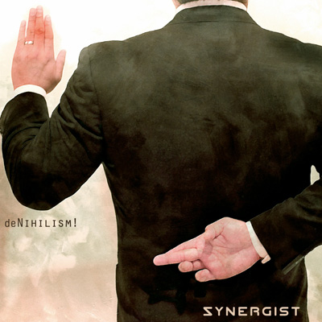

deNihilism!
by Synergist - Lyrics by CutcH*

under the lullaby moves a silence feared by most
we shut our eyes, just to rest for a while
but the nightmare, well, it's woken us up
in the end
given more than you've taken away
tried hard
we learn thinkin' of your mistakes
save for the darkness there's no other way for the dawn to break
our demise set the planet alight but the cycle promotes a growth
we stumbled blind for a short little while
but the fire rallied our eyes to adjust
in the end
given more than you've taken away
tried hard
we learn thinkin' of your mistakes
save for the darkness there's no other way for the dawn to break
you know that time will make this right, it's time to go
it starts with the cycle
with a circle
now you could deny my right to criticize
cause your dominion, well it don't see to my life
but don't you dare close my eyes
we've been watching like a bird in flight
goodnight, goodbye
we'll crowd around to see you die
and all of this time
with your pride
you've been part of churning out the wise
you've been fired
you've been catalyzed
if your failure had all been for not
would we still be your fools or what?
what's this feeling we cannot ignore?
you've revived the informed
in the end
given more than you've taken away
tried hard
we learn thinkin' of your mistakes
save for the darkness there's no other way for the dawn to break
you know that time will make this right, it's time to go
it ends with the cycle
with a circle
*CutcH is Craig McCutcheon |